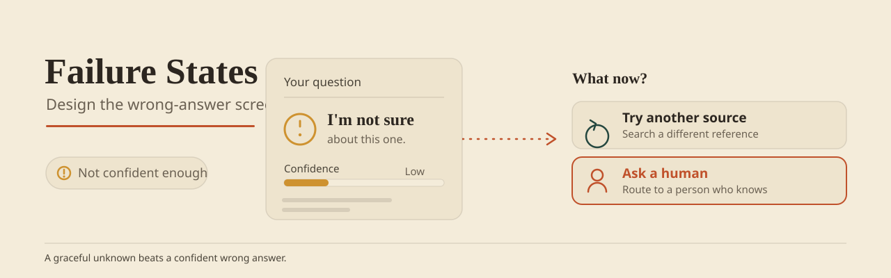

A failure state is not a footnote. It's where the next ten interactions are won or lost. This is sharpest with a language model, which will happily hallucinate a fluent, confident answer rather than admit it doesn't know — so the design has to make abstention, the honest "I'm not sure," the easy path. Handle your own uncertainty out loud and the user gives you another shot. Fail quietly — or fail confidently wrong — and the user leaves. So design the wrong answer before you design the right one. The five patterns below are the ones I keep reaching for.

Try it — the pattern, live
The same live demo that runs in the book edition's field guide. Synthetic data; nothing leaves the page.
1. The Honest "I Don't Know"
Your model's confidence drops below the threshold. Say so: "I couldn't find a confident answer. This might be because [reason]." Don't fake it. A plausible hallucination costs more than an honest blank.
Example language:
- "I'm not confident enough in my answer. Try rephrasing your question or checking your data."
- "This document is outside my training data. I recommend manual review."
- "The system encountered an edge case. Please contact support with this reference ID: XYZ."
It comes down to specificity. "Something went wrong" tells the user nothing. "Your query matches fewer than 3 historical examples, so I can't predict with confidence" tells them why — and what to change. Choose this pattern wherever the model can name the reason it fell short.
2. The Graduated Fallback
A dead end ends the session. A ladder keeps it going. "I can't give a precise recommendation, but here are three alternatives: (A) Use the default, (B) See similar historical cases, (C) Talk to an expert." Each rung is more degraded than the last, and every rung still moves the user forward. That's fallback design at scale.
Fallback hierarchy (best to worst):
- Primary: AI recommendation (high confidence)
- Secondary: AI recommendation (low confidence) + disclaimer
- Tertiary: Historical baseline ("The average case similar to yours…")
- Quaternary: Manual process ("Contact support for expert review")
- Null: System unavailable (offline / maintenance)
The user always has something in hand. Trust in the model can wait; the work doesn't have to. Reach for this whenever a hard failure would otherwise strand someone mid-task.
3. The Error Context Card
When something breaks, "Error" tells the user nothing they can use. Show a card that carries four things:
- What failed: "Data processing timed out"
- Why it might have failed: "Your dataset is very large (500MB). Try a smaller file or contact support for batch processing."
- What you can do: Retry, View guide, Contact support
- Reference code: If error persists, users can reference this code with support
The card turns a cryptic stop into a failure the user can act on. It respects their time and their intelligence. Use it wherever an error has a knowable cause and a next step.
4. The Confidence-Based Disclosure
Let the interface show where confidence breaks down. High (>80%): show the result plainly. Middle (50–80%): keep the result, attach a warning banner. Low (<50%): hide the result and run the fallback instead.
The system never snaps from working to broken. It gets less certain, says so as it goes, and the user watches the confidence fade in real time. Choose this when a single accuracy number hides a wide spread of certainty underneath.
5. The Transparency Log
Keep a log the user can read: "When I said X, here's what actually happened," or "Last time I was wrong about Y, here's why." A system that owns its past misses earns trust the next time it speaks up.
- "Last week I recommended this lead with 85% confidence. You marked it low-quality. Updated confidence: 72%."
- "I've been wrong about churn 3× this month. Recent model updates should reduce this. Accuracy now: 77% (was 71%)."
- "This is a new product category I haven't seen before. I'll learn from this case. Current uncertainty: ±25%."
The log doesn't bury the miss. It converts it into something the user watched the model learn from. People lean on systems that admit error and visibly improve. Reach for this in any product a user returns to across sessions.
Implementation Checklist
- Identify failure modes: Write down 5–10 ways your system can fail.
- Design each failure UI: A specific state for each, never a generic "Error 500".
- Add a fallback: Decide what the user does when the AI can't.
- User-test failures: Put people in front of the error states. Do they follow? Do they know the next move?
- Monitor failure rates: Watch which errors get hit most. Fix the common ones first.
- Transparency-first language: Plain words, no jargon.
See This Pattern In Action
- Programmatic Advertising Platform: What the screen says when the recommendation can't clear the bar.
- OrgOS: Saying it plainly when a complex system hits its limits.
One pattern a month, with the tradeoffs spelled out and the templates I use.
If failure is frequent, the fix is the system, not the copy — a beautifully-worded error shown hourly is an apology habit. And over-apologizing reads as instability: past a point, the honest 'I'm not sure' should get quieter and rarer, not more charming.